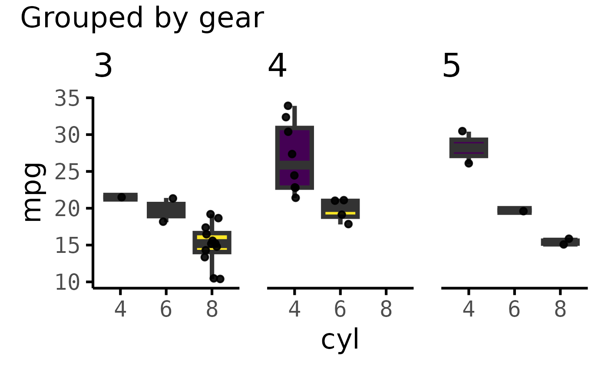
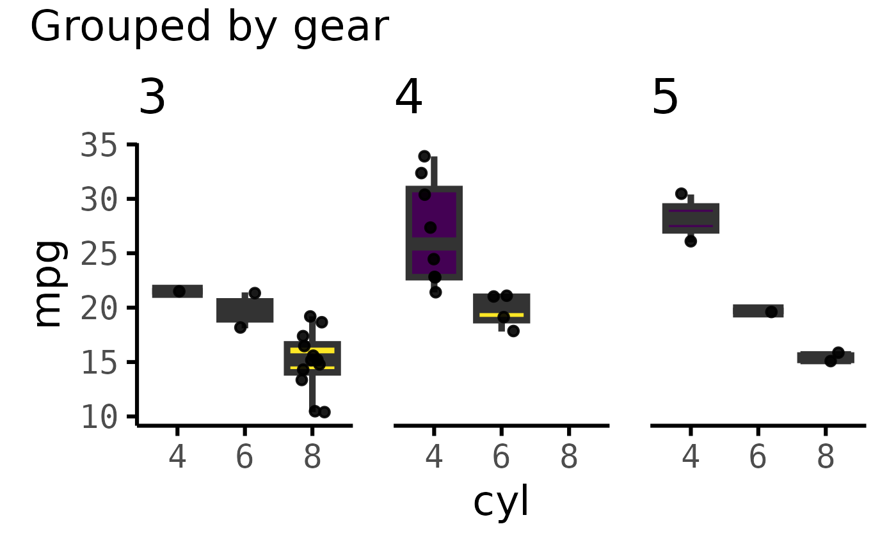
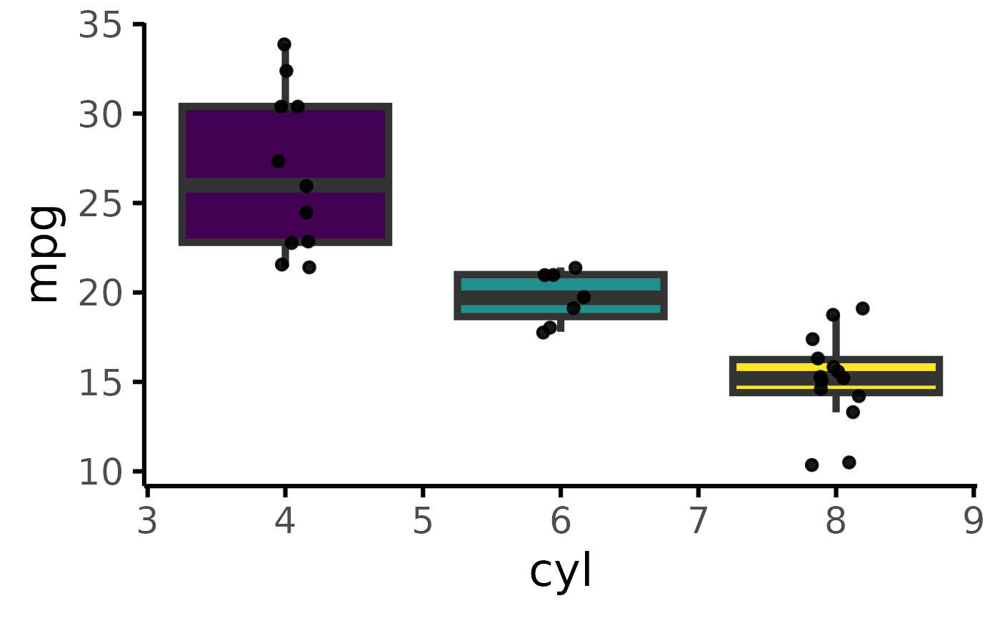
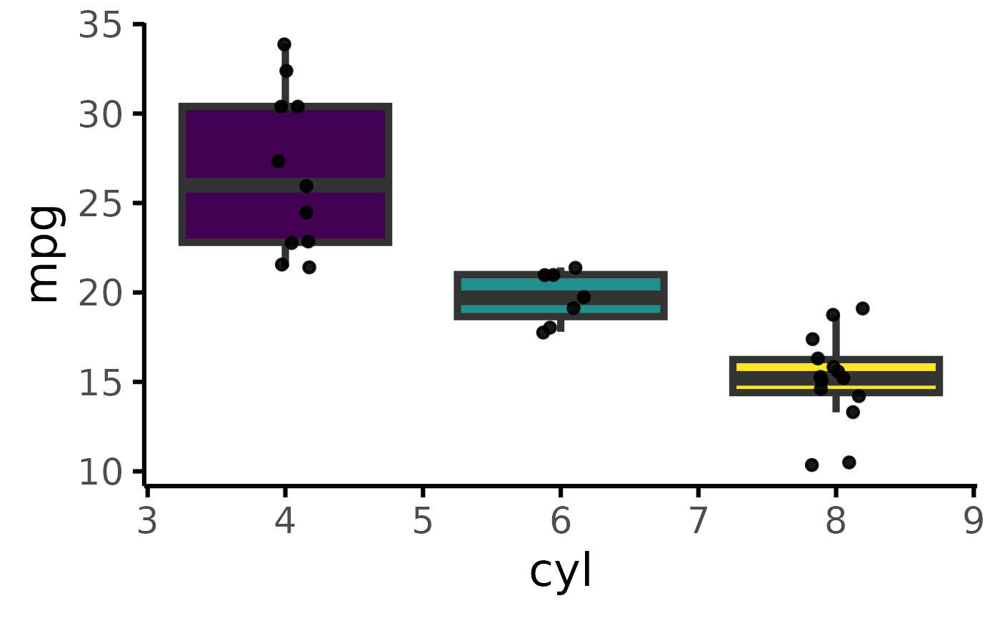
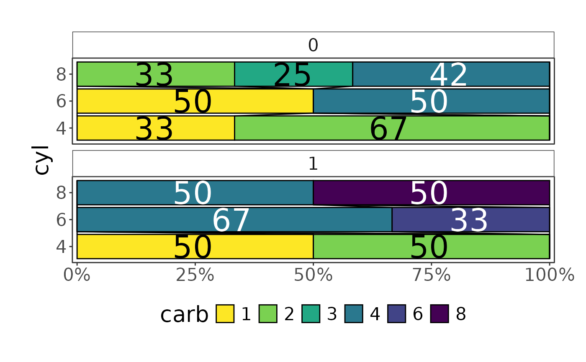
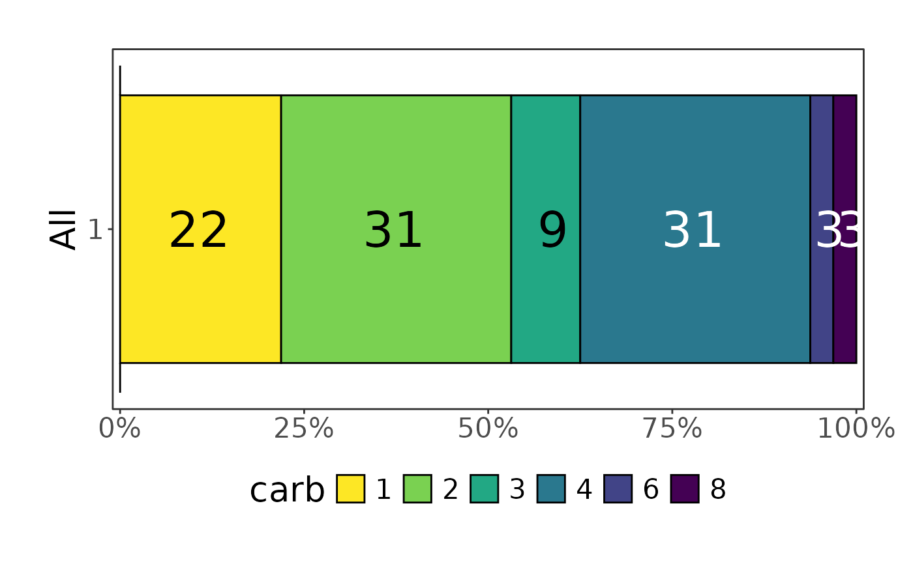
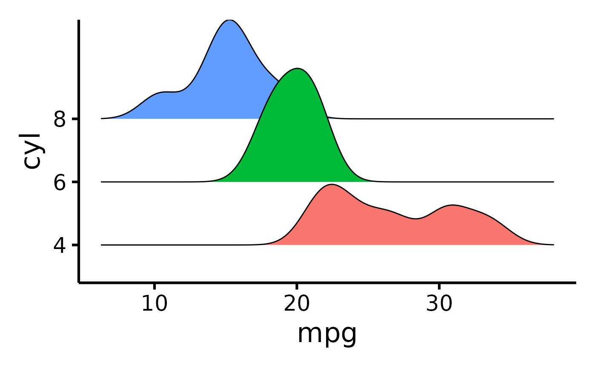
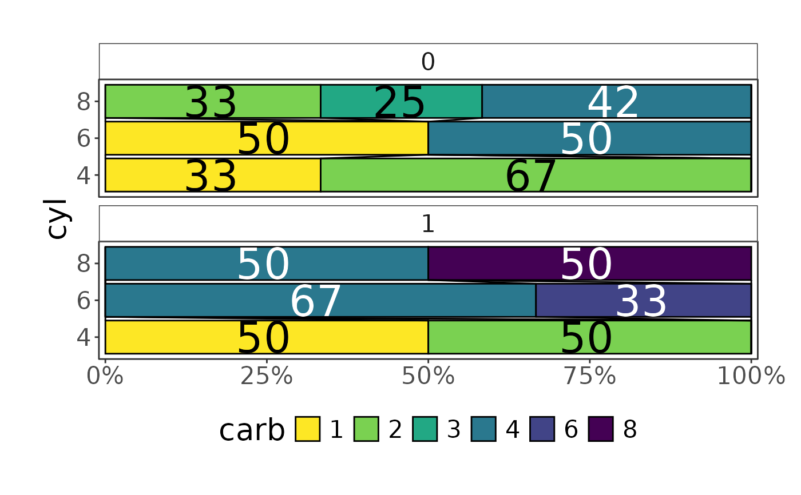
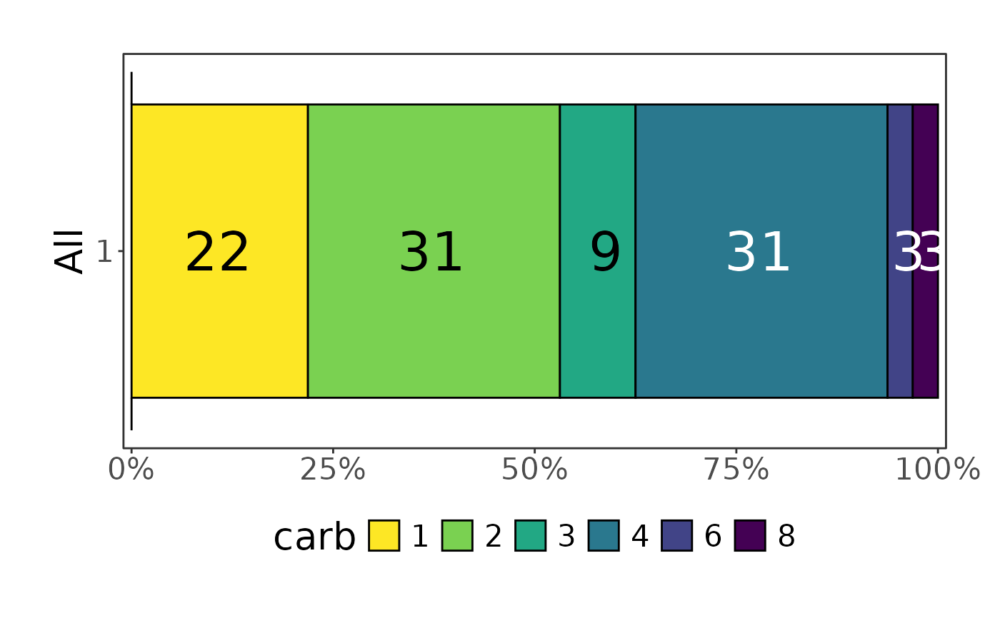
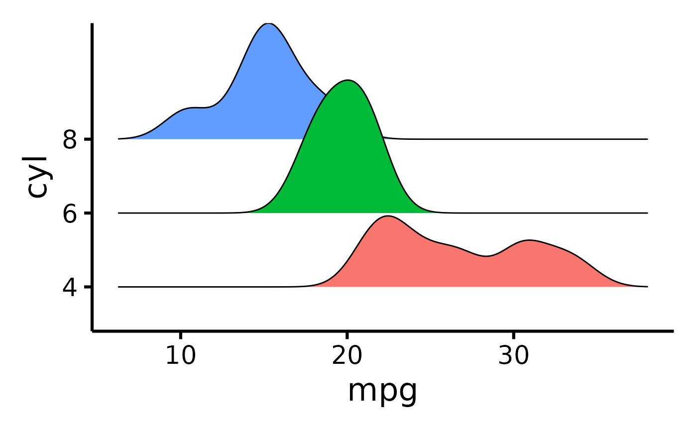

Data correlations evaluation module
Source:R/data_plots.R, R/plot_bar.R, R/plot_box.R, and 5 more
data-plots.RdData correlations evaluation module
Wrapper to create plot based on provided type
Single vertical barplot
Beautiful box plot(s)
Create nice box-plots
Nice horizontal stacked bars (Grotta bars)
Plot nice ridge plot
Readying data for sankey plot
Beautiful sankey plot with option to split by a tertiary group
Beautiful violin plot
Beatiful violin plot
Usage
data_visuals_ui(id, tab_title = "Plots", ...)
data_visuals_server(id, data, ...)
create_plot(data, type, pri, sec, ter = NULL, ...)
plot_bar_single(
data,
pri,
sec = NULL,
style = c("stack", "dodge", "fill"),
max_level = 30
)
plot_box(data, pri, sec, ter = NULL, ...)
plot_box_single(data, pri, sec = NULL, seed = 2103)
plot_hbars(data, pri, sec, ter = NULL)
plot_ridge(data, x, y, z = NULL, ...)
sankey_ready(data, pri, sec, numbers = "count", ...)
plot_sankey(
data,
pri,
sec,
ter = NULL,
color.group = "pri",
colors = NULL,
missing.level = "Missing"
)
plot_scatter(data, pri, sec, ter = NULL)
plot_violin(data, pri, sec, ter = NULL)Arguments
- id
Module id. (Use 'ns("id")')
- ...
passed on to wrap_plot_list
- data
data frame
- type
plot type (derived from possible_plots() and matches custom function)
- pri
primary variable
- sec
secondary variable
- ter
tertiary variable
- style
barplot style passed to geom_bar position argument. One of c("stack", "dodge", "fill")
Value
Shiny ui module
shiny server module
ggplot2 object
ggplot object
ggplot2 object
ggplot object
ggplot2 object
ggplot2 object
data.frame
ggplot2 object
ggplot2 object
ggplot2 object
Examples
create_plot(mtcars, "plot_violin", "mpg", "cyl") |> attributes()
#> $class
#> [1] "ggplot2::ggplot" "ggplot" "ggplot2::gg" "S7_object"
#> [5] "gg"
#>
#> $S7_class
#> <ggplot2::ggplot> class
#> @ parent : <ggplot2::gg>
#> @ constructor: function(data, ..., layers, scales, guides, mapping, theme, coordinates, facet, layout, labels, meta, plot_env) {...}
#> @ validator : <NULL>
#> @ properties :
#> $ data : <ANY>
#> $ layers : <list>
#> $ scales : S3<ScalesList>
#> $ guides : S3<Guides>
#> $ mapping : <ggplot2::mapping>
#> $ theme : <ggplot2::theme>
#> $ coordinates: S3<Coord>
#> $ facet : S3<Facet>
#> $ layout : S3<Layout>
#> $ labels : <ggplot2::labels>
#> $ meta : <list>
#> $ plot_env : <environment>
#>
#> $data
#> mpg cyl disp hp drat wt qsec vs am gear carb
#> Mazda RX4 21.0 6 160.0 110 3.90 2.620 16.46 0 1 4 4
#> Mazda RX4 Wag 21.0 6 160.0 110 3.90 2.875 17.02 0 1 4 4
#> Datsun 710 22.8 4 108.0 93 3.85 2.320 18.61 1 1 4 1
#> Hornet 4 Drive 21.4 6 258.0 110 3.08 3.215 19.44 1 0 3 1
#> Hornet Sportabout 18.7 8 360.0 175 3.15 3.440 17.02 0 0 3 2
#> Valiant 18.1 6 225.0 105 2.76 3.460 20.22 1 0 3 1
#> Duster 360 14.3 8 360.0 245 3.21 3.570 15.84 0 0 3 4
#> Merc 240D 24.4 4 146.7 62 3.69 3.190 20.00 1 0 4 2
#> Merc 230 22.8 4 140.8 95 3.92 3.150 22.90 1 0 4 2
#> Merc 280 19.2 6 167.6 123 3.92 3.440 18.30 1 0 4 4
#> Merc 280C 17.8 6 167.6 123 3.92 3.440 18.90 1 0 4 4
#> Merc 450SE 16.4 8 275.8 180 3.07 4.070 17.40 0 0 3 3
#> Merc 450SL 17.3 8 275.8 180 3.07 3.730 17.60 0 0 3 3
#> Merc 450SLC 15.2 8 275.8 180 3.07 3.780 18.00 0 0 3 3
#> Cadillac Fleetwood 10.4 8 472.0 205 2.93 5.250 17.98 0 0 3 4
#> Lincoln Continental 10.4 8 460.0 215 3.00 5.424 17.82 0 0 3 4
#> Chrysler Imperial 14.7 8 440.0 230 3.23 5.345 17.42 0 0 3 4
#> Fiat 128 32.4 4 78.7 66 4.08 2.200 19.47 1 1 4 1
#> Honda Civic 30.4 4 75.7 52 4.93 1.615 18.52 1 1 4 2
#> Toyota Corolla 33.9 4 71.1 65 4.22 1.835 19.90 1 1 4 1
#> Toyota Corona 21.5 4 120.1 97 3.70 2.465 20.01 1 0 3 1
#> Dodge Challenger 15.5 8 318.0 150 2.76 3.520 16.87 0 0 3 2
#> AMC Javelin 15.2 8 304.0 150 3.15 3.435 17.30 0 0 3 2
#> Camaro Z28 13.3 8 350.0 245 3.73 3.840 15.41 0 0 3 4
#> Pontiac Firebird 19.2 8 400.0 175 3.08 3.845 17.05 0 0 3 2
#> Fiat X1-9 27.3 4 79.0 66 4.08 1.935 18.90 1 1 4 1
#> Porsche 914-2 26.0 4 120.3 91 4.43 2.140 16.70 0 1 5 2
#> Lotus Europa 30.4 4 95.1 113 3.77 1.513 16.90 1 1 5 2
#> Ford Pantera L 15.8 8 351.0 264 4.22 3.170 14.50 0 1 5 4
#> Ferrari Dino 19.7 6 145.0 175 3.62 2.770 15.50 0 1 5 6
#> Maserati Bora 15.0 8 301.0 335 3.54 3.570 14.60 0 1 5 8
#> Volvo 142E 21.4 4 121.0 109 4.11 2.780 18.60 1 1 4 2
#>
#> $layers
#> $layers$geom_violin
#> geom_violin: na.rm = FALSE, orientation = NA, quantile_gp = list(colour = NULL, linetype = 0, linewidth = NULL)
#> stat_ydensity: trim = TRUE, scale = area, na.rm = FALSE, orientation = NA, bounds = c(-Inf, Inf)
#> position_dodge
#>
#> $layers$geom_point
#> mapping: y = ~.data$Mean
#> geom_point: na.rm = FALSE
#> stat_identity: na.rm = FALSE
#> position_identity
#>
#> $layers$geom_errorbar
#> mapping: y = ~.data$Mean, ymin = ~dataSummary[, 5], ymax = ~dataSummary[, 6]
#> geom_errorbar: na.rm = FALSE, orientation = NA, lineend = butt, width = 0.1
#> stat_identity: na.rm = FALSE
#> position_identity
#>
#>
#> $scales
#> <ggproto object: Class ScalesList, gg>
#> add: function
#> add_defaults: function
#> add_missing: function
#> backtransform_df: function
#> clone: function
#> find: function
#> get_scales: function
#> has_scale: function
#> input: function
#> map_df: function
#> n: function
#> non_position_scales: function
#> scales: list
#> set_palettes: function
#> train_df: function
#> transform_df: function
#> super: <ggproto object: Class ScalesList, gg>
#>
#> $guides
#> <Guides[0] ggproto object>
#>
#> <empty>
#>
#> $mapping
#> Aesthetic mapping:
#> * `x` -> `.data[["cyl"]]`
#> * `y` -> `.data[["mpg"]]`
#> * `fill` -> `.data[["cyl"]]`
#>
#> $theme
#> <theme> List of 144
#> $ line : <ggplot2::element_line>
#> ..@ colour : chr "black"
#> ..@ linewidth : num 1.09
#> ..@ linetype : num 1
#> ..@ lineend : chr "butt"
#> ..@ linejoin : chr "round"
#> ..@ arrow : logi FALSE
#> ..@ arrow.fill : chr "black"
#> ..@ inherit.blank: logi TRUE
#> $ rect : <ggplot2::element_rect>
#> ..@ fill : chr "white"
#> ..@ colour : chr "black"
#> ..@ linewidth : num 1.09
#> ..@ linetype : num 1
#> ..@ linejoin : chr "round"
#> ..@ inherit.blank: logi TRUE
#> $ text : <ggplot2::element_text>
#> ..@ family : chr ""
#> ..@ face : chr "plain"
#> ..@ italic : chr NA
#> ..@ fontweight : num NA
#> ..@ fontwidth : num NA
#> ..@ colour : chr "black"
#> ..@ size : num 24
#> ..@ hjust : num 0.5
#> ..@ vjust : num 0.5
#> ..@ angle : num 0
#> ..@ lineheight : num 0.9
#> ..@ margin : <ggplot2::margin> num [1:4] 0 0 0 0
#> ..@ debug : logi FALSE
#> ..@ inherit.blank: logi TRUE
#> $ title : <ggplot2::element_text>
#> ..@ family : NULL
#> ..@ face : NULL
#> ..@ italic : chr NA
#> ..@ fontweight : num NA
#> ..@ fontwidth : num NA
#> ..@ colour : NULL
#> ..@ size : NULL
#> ..@ hjust : NULL
#> ..@ vjust : NULL
#> ..@ angle : NULL
#> ..@ lineheight : NULL
#> ..@ margin : NULL
#> ..@ debug : NULL
#> ..@ inherit.blank: logi TRUE
#> $ point : <ggplot2::element_point>
#> ..@ colour : chr "black"
#> ..@ shape : num 19
#> ..@ size : num 3.27
#> ..@ fill : chr "white"
#> ..@ stroke : num 1.09
#> ..@ inherit.blank: logi TRUE
#> $ polygon : <ggplot2::element_polygon>
#> ..@ fill : chr "white"
#> ..@ colour : chr "black"
#> ..@ linewidth : num 1.09
#> ..@ linetype : num 1
#> ..@ linejoin : chr "round"
#> ..@ inherit.blank: logi TRUE
#> $ geom : <ggplot2::element_geom>
#> ..@ ink : chr "black"
#> ..@ paper : chr "white"
#> ..@ accent : chr "#3366FF"
#> ..@ linewidth : num 1.09
#> ..@ borderwidth: num 1.09
#> ..@ linetype : int 1
#> ..@ bordertype : int 1
#> ..@ family : chr ""
#> ..@ fontsize : num 8.44
#> ..@ pointsize : num 3.27
#> ..@ pointshape : num 19
#> ..@ colour : NULL
#> ..@ fill : NULL
#> $ spacing : 'simpleUnit' num 12points
#> ..- attr(*, "unit")= int 8
#> $ margins : <ggplot2::margin> num [1:4] 12 12 12 12
#> $ aspect.ratio : NULL
#> $ axis.title : NULL
#> $ axis.title.x : <ggplot2::element_text>
#> ..@ family : NULL
#> ..@ face : NULL
#> ..@ italic : chr NA
#> ..@ fontweight : num NA
#> ..@ fontwidth : num NA
#> ..@ colour : NULL
#> ..@ size : NULL
#> ..@ hjust : NULL
#> ..@ vjust : num 1
#> ..@ angle : NULL
#> ..@ lineheight : NULL
#> ..@ margin : <ggplot2::margin> num [1:4] 6 0 0 0
#> ..@ debug : NULL
#> ..@ inherit.blank: logi TRUE
#> $ axis.title.x.top : <ggplot2::element_text>
#> ..@ family : NULL
#> ..@ face : NULL
#> ..@ italic : chr NA
#> ..@ fontweight : num NA
#> ..@ fontwidth : num NA
#> ..@ colour : NULL
#> ..@ size : NULL
#> ..@ hjust : NULL
#> ..@ vjust : num 0
#> ..@ angle : NULL
#> ..@ lineheight : NULL
#> ..@ margin : <ggplot2::margin> num [1:4] 0 0 6 0
#> ..@ debug : NULL
#> ..@ inherit.blank: logi TRUE
#> $ axis.title.x.bottom : NULL
#> $ axis.title.y : <ggplot2::element_text>
#> ..@ family : NULL
#> ..@ face : NULL
#> ..@ italic : chr NA
#> ..@ fontweight : num NA
#> ..@ fontwidth : num NA
#> ..@ colour : NULL
#> ..@ size : NULL
#> ..@ hjust : NULL
#> ..@ vjust : num 1
#> ..@ angle : num 90
#> ..@ lineheight : NULL
#> ..@ margin : <ggplot2::margin> num [1:4] 0 6 0 0
#> ..@ debug : NULL
#> ..@ inherit.blank: logi TRUE
#> $ axis.title.y.left : NULL
#> $ axis.title.y.right : <ggplot2::element_text>
#> ..@ family : NULL
#> ..@ face : NULL
#> ..@ italic : chr NA
#> ..@ fontweight : num NA
#> ..@ fontwidth : num NA
#> ..@ colour : NULL
#> ..@ size : NULL
#> ..@ hjust : NULL
#> ..@ vjust : num 1
#> ..@ angle : num -90
#> ..@ lineheight : NULL
#> ..@ margin : <ggplot2::margin> num [1:4] 0 0 0 6
#> ..@ debug : NULL
#> ..@ inherit.blank: logi TRUE
#> $ axis.text : <ggplot2::element_text>
#> ..@ family : NULL
#> ..@ face : NULL
#> ..@ italic : chr NA
#> ..@ fontweight : num NA
#> ..@ fontwidth : num NA
#> ..@ colour : chr "#4D4D4DFF"
#> ..@ size : 'rel' num 0.8
#> ..@ hjust : NULL
#> ..@ vjust : NULL
#> ..@ angle : NULL
#> ..@ lineheight : NULL
#> ..@ margin : NULL
#> ..@ debug : NULL
#> ..@ inherit.blank: logi TRUE
#> $ axis.text.x : <ggplot2::element_text>
#> ..@ family : NULL
#> ..@ face : NULL
#> ..@ italic : chr NA
#> ..@ fontweight : num NA
#> ..@ fontwidth : num NA
#> ..@ colour : chr "black"
#> ..@ size : NULL
#> ..@ hjust : NULL
#> ..@ vjust : num 1
#> ..@ angle : NULL
#> ..@ lineheight : NULL
#> ..@ margin : <ggplot2::margin> num [1:4] 4.8 0 0 0
#> ..@ debug : NULL
#> ..@ inherit.blank: logi FALSE
#> $ axis.text.x.top : <ggplot2::element_text>
#> ..@ family : NULL
#> ..@ face : NULL
#> ..@ italic : chr NA
#> ..@ fontweight : num NA
#> ..@ fontwidth : num NA
#> ..@ colour : NULL
#> ..@ size : NULL
#> ..@ hjust : NULL
#> ..@ vjust : num 0
#> ..@ angle : NULL
#> ..@ lineheight : NULL
#> ..@ margin : <ggplot2::margin> num [1:4] 0 0 4.8 0
#> ..@ debug : NULL
#> ..@ inherit.blank: logi TRUE
#> $ axis.text.x.bottom : NULL
#> $ axis.text.y : <ggplot2::element_text>
#> ..@ family : NULL
#> ..@ face : NULL
#> ..@ italic : chr NA
#> ..@ fontweight : num NA
#> ..@ fontwidth : num NA
#> ..@ colour : chr "black"
#> ..@ size : NULL
#> ..@ hjust : num 1
#> ..@ vjust : NULL
#> ..@ angle : NULL
#> ..@ lineheight : NULL
#> ..@ margin : <ggplot2::margin> num [1:4] 0 4.8 0 0
#> ..@ debug : NULL
#> ..@ inherit.blank: logi FALSE
#> $ axis.text.y.left : NULL
#> $ axis.text.y.right : <ggplot2::element_text>
#> ..@ family : NULL
#> ..@ face : NULL
#> ..@ italic : chr NA
#> ..@ fontweight : num NA
#> ..@ fontwidth : num NA
#> ..@ colour : NULL
#> ..@ size : NULL
#> ..@ hjust : num 0
#> ..@ vjust : NULL
#> ..@ angle : NULL
#> ..@ lineheight : NULL
#> ..@ margin : <ggplot2::margin> num [1:4] 0 0 0 4.8
#> ..@ debug : NULL
#> ..@ inherit.blank: logi TRUE
#> $ axis.text.theta : NULL
#> $ axis.text.r : <ggplot2::element_text>
#> ..@ family : NULL
#> ..@ face : NULL
#> ..@ italic : chr NA
#> ..@ fontweight : num NA
#> ..@ fontwidth : num NA
#> ..@ colour : NULL
#> ..@ size : NULL
#> ..@ hjust : num 0.5
#> ..@ vjust : NULL
#> ..@ angle : NULL
#> ..@ lineheight : NULL
#> ..@ margin : <ggplot2::margin> num [1:4] 0 4.8 0 4.8
#> ..@ debug : NULL
#> ..@ inherit.blank: logi TRUE
#> $ axis.ticks : <ggplot2::element_line>
#> ..@ colour : chr "black"
#> ..@ linewidth : NULL
#> ..@ linetype : NULL
#> ..@ lineend : NULL
#> ..@ linejoin : NULL
#> ..@ arrow : logi FALSE
#> ..@ arrow.fill : chr "black"
#> ..@ inherit.blank: logi FALSE
#> $ axis.ticks.x : NULL
#> $ axis.ticks.x.top : NULL
#> $ axis.ticks.x.bottom : NULL
#> $ axis.ticks.y : NULL
#> $ axis.ticks.y.left : NULL
#> $ axis.ticks.y.right : NULL
#> $ axis.ticks.theta : NULL
#> $ axis.ticks.r : NULL
#> $ axis.minor.ticks.x.top : NULL
#> $ axis.minor.ticks.x.bottom : NULL
#> $ axis.minor.ticks.y.left : NULL
#> $ axis.minor.ticks.y.right : NULL
#> $ axis.minor.ticks.theta : NULL
#> $ axis.minor.ticks.r : NULL
#> $ axis.ticks.length : 'rel' num 0.5
#> $ axis.ticks.length.x : NULL
#> $ axis.ticks.length.x.top : NULL
#> $ axis.ticks.length.x.bottom : NULL
#> $ axis.ticks.length.y : NULL
#> $ axis.ticks.length.y.left : NULL
#> $ axis.ticks.length.y.right : NULL
#> $ axis.ticks.length.theta : NULL
#> $ axis.ticks.length.r : NULL
#> $ axis.minor.ticks.length : 'rel' num 0.75
#> $ axis.minor.ticks.length.x : NULL
#> $ axis.minor.ticks.length.x.top : NULL
#> $ axis.minor.ticks.length.x.bottom: NULL
#> $ axis.minor.ticks.length.y : NULL
#> $ axis.minor.ticks.length.y.left : NULL
#> $ axis.minor.ticks.length.y.right : NULL
#> $ axis.minor.ticks.length.theta : NULL
#> $ axis.minor.ticks.length.r : NULL
#> $ axis.line : <ggplot2::element_line>
#> ..@ colour : chr "black"
#> ..@ linewidth : NULL
#> ..@ linetype : NULL
#> ..@ lineend : NULL
#> ..@ linejoin : NULL
#> ..@ arrow : logi FALSE
#> ..@ arrow.fill : chr "black"
#> ..@ inherit.blank: logi FALSE
#> $ axis.line.x : NULL
#> $ axis.line.x.top : NULL
#> $ axis.line.x.bottom : NULL
#> $ axis.line.y : NULL
#> $ axis.line.y.left : NULL
#> $ axis.line.y.right : NULL
#> $ axis.line.theta : NULL
#> $ axis.line.r : NULL
#> $ legend.background : <ggplot2::element_rect>
#> ..@ fill : NULL
#> ..@ colour : logi NA
#> ..@ linewidth : NULL
#> ..@ linetype : NULL
#> ..@ linejoin : NULL
#> ..@ inherit.blank: logi TRUE
#> $ legend.margin : NULL
#> $ legend.spacing : 'rel' num 2
#> $ legend.spacing.x : NULL
#> $ legend.spacing.y : NULL
#> $ legend.key : NULL
#> $ legend.key.size : 'simpleUnit' num 1.2lines
#> ..- attr(*, "unit")= int 3
#> $ legend.key.height : NULL
#> $ legend.key.width : NULL
#> $ legend.key.spacing : NULL
#> $ legend.key.spacing.x : NULL
#> $ legend.key.spacing.y : NULL
#> $ legend.key.justification : NULL
#> $ legend.frame : NULL
#> $ legend.ticks : NULL
#> $ legend.ticks.length : 'rel' num 0.2
#> $ legend.axis.line : NULL
#> $ legend.text : <ggplot2::element_text>
#> ..@ family : NULL
#> ..@ face : NULL
#> ..@ italic : chr NA
#> ..@ fontweight : num NA
#> ..@ fontwidth : num NA
#> ..@ colour : NULL
#> ..@ size : 'rel' num 0.8
#> ..@ hjust : NULL
#> ..@ vjust : NULL
#> ..@ angle : NULL
#> ..@ lineheight : NULL
#> ..@ margin : NULL
#> ..@ debug : NULL
#> ..@ inherit.blank: logi TRUE
#> $ legend.text.position : NULL
#> $ legend.title : <ggplot2::element_text>
#> ..@ family : NULL
#> ..@ face : NULL
#> ..@ italic : chr NA
#> ..@ fontweight : num NA
#> ..@ fontwidth : num NA
#> ..@ colour : NULL
#> ..@ size : NULL
#> ..@ hjust : num 0
#> ..@ vjust : NULL
#> ..@ angle : NULL
#> ..@ lineheight : NULL
#> ..@ margin : NULL
#> ..@ debug : NULL
#> ..@ inherit.blank: logi TRUE
#> $ legend.title.position : NULL
#> $ legend.position : chr "none"
#> $ legend.position.inside : NULL
#> $ legend.direction : NULL
#> $ legend.byrow : NULL
#> $ legend.justification : chr "center"
#> $ legend.justification.top : NULL
#> $ legend.justification.bottom : NULL
#> $ legend.justification.left : NULL
#> $ legend.justification.right : NULL
#> $ legend.justification.inside : NULL
#> [list output truncated]
#> @ complete: logi TRUE
#> @ validate: logi TRUE
#>
#> $coordinates
#> <ggproto object: Class CoordCartesian, Coord, gg>
#> aspect: function
#> backtransform_range: function
#> clip: on
#> default: TRUE
#> distance: function
#> draw_panel: function
#> expand: TRUE
#> is_free: function
#> is_linear: function
#> labels: function
#> limits: list
#> modify_scales: function
#> range: function
#> ratio: NULL
#> render_axis_h: function
#> render_axis_v: function
#> render_bg: function
#> render_fg: function
#> reverse: none
#> setup_data: function
#> setup_layout: function
#> setup_panel_guides: function
#> setup_panel_params: function
#> setup_params: function
#> train_panel_guides: function
#> transform: function
#> super: <ggproto object: Class CoordCartesian, Coord, gg>
#>
#> $facet
#> <ggproto object: Class FacetNull, Facet, gg>
#> attach_axes: function
#> attach_strips: function
#> compute_layout: function
#> draw_back: function
#> draw_front: function
#> draw_labels: function
#> draw_panel_content: function
#> draw_panels: function
#> finish_data: function
#> format_strip_labels: function
#> init_gtable: function
#> init_scales: function
#> map_data: function
#> params: list
#> set_panel_size: function
#> setup_data: function
#> setup_panel_params: function
#> setup_params: function
#> shrink: TRUE
#> train_scales: function
#> vars: function
#> super: <ggproto object: Class FacetNull, Facet, gg>
#>
#> $layout
#> <ggproto object: Class Layout, gg>
#> coord: NULL
#> coord_params: list
#> facet: NULL
#> facet_params: list
#> finish_data: function
#> get_scales: function
#> layout: NULL
#> map_position: function
#> panel_params: NULL
#> panel_scales_x: NULL
#> panel_scales_y: NULL
#> render: function
#> render_labels: function
#> reset_scales: function
#> resolve_label: function
#> setup: function
#> setup_panel_guides: function
#> setup_panel_params: function
#> train_position: function
#> super: <ggproto object: Class Layout, gg>
#>
#> $labels
#> <ggplot2::labels> List of 2
#> $ x: chr "cyl"
#> $ y: chr "mpg"
#>
#> $meta
#> list()
#>
#> $plot_env
#> <environment: 0x564345c05938>
#>
#> $code
#> FreesearchR::plot_violin(pri = "mpg", sec = "cyl", ter = NULL)
#>
mtcars |>
dplyr::mutate(cyl = factor(cyl), am = factor(am)) |>
plot_bar_single(pri = "cyl", sec = "am", style = "fill")
 mtcars |>
dplyr::mutate(cyl = factor(cyl), am = factor(am)) |>
plot_bar_single(pri = "cyl", style = "stack")
mtcars |>
dplyr::mutate(cyl = factor(cyl), am = factor(am)) |>
plot_bar_single(pri = "cyl", style = "stack")
 mtcars |> plot_box(pri = "mpg", sec = "gear")
#> Error in loadNamespace(x): there is no package called ‘viridis’
mtcars |> plot_box(pri = "mpg", sec="cyl")
#> Error in loadNamespace(x): there is no package called ‘viridis’
mtcars |>
default_parsing() |>
plot_box(pri = "mpg", sec = "cyl", ter = "gear")
#> Error in loadNamespace(x): there is no package called ‘viridis’
mtcars |>
default_parsing() |>
plot_box(pri = "mpg", sec = "cyl", ter = "gear",axis.font.family="mono")
#> Error in loadNamespace(x): there is no package called ‘viridis’
mtcars |> plot_box_single("mpg")
#> Error in loadNamespace(x): there is no package called ‘viridis’
mtcars |> plot_box_single("mpg","cyl")
#> Error in loadNamespace(x): there is no package called ‘viridis’
gtsummary::trial |> plot_box_single("age","trt")
#> Error in loadNamespace(x): there is no package called ‘viridis’
mtcars |> plot_hbars(pri = "carb", sec = "cyl")
#> Scale for fill is already present.
#> Adding another scale for fill, which will replace the existing scale.
mtcars |> plot_box(pri = "mpg", sec = "gear")
#> Error in loadNamespace(x): there is no package called ‘viridis’
mtcars |> plot_box(pri = "mpg", sec="cyl")
#> Error in loadNamespace(x): there is no package called ‘viridis’
mtcars |>
default_parsing() |>
plot_box(pri = "mpg", sec = "cyl", ter = "gear")
#> Error in loadNamespace(x): there is no package called ‘viridis’
mtcars |>
default_parsing() |>
plot_box(pri = "mpg", sec = "cyl", ter = "gear",axis.font.family="mono")
#> Error in loadNamespace(x): there is no package called ‘viridis’
mtcars |> plot_box_single("mpg")
#> Error in loadNamespace(x): there is no package called ‘viridis’
mtcars |> plot_box_single("mpg","cyl")
#> Error in loadNamespace(x): there is no package called ‘viridis’
gtsummary::trial |> plot_box_single("age","trt")
#> Error in loadNamespace(x): there is no package called ‘viridis’
mtcars |> plot_hbars(pri = "carb", sec = "cyl")
#> Scale for fill is already present.
#> Adding another scale for fill, which will replace the existing scale.
 mtcars |> plot_hbars(pri = "carb", sec = "cyl", ter="am")
#> Scale for fill is already present.
#> Adding another scale for fill, which will replace the existing scale.

mtcars |> plot_hbars(pri = "carb", sec = NULL)
#> Scale for fill is already present.
#> Adding another scale for fill, which will replace the existing scale.
mtcars |> plot_hbars(pri = "carb", sec = "cyl", ter="am")
#> Scale for fill is already present.
#> Adding another scale for fill, which will replace the existing scale.

mtcars |> plot_hbars(pri = "carb", sec = NULL)
#> Scale for fill is already present.
#> Adding another scale for fill, which will replace the existing scale.
 mtcars |>
default_parsing() |>
plot_ridge(x = "mpg", y = "cyl")
#> Picking joint bandwidth of 1.38

mtcars |> plot_ridge(x = "mpg", y = "cyl", z = "gear")
#> Picking joint bandwidth of 1.52
#> Warning: The following aesthetics were dropped during statistical transformation: y and
#> fill.
#> ℹ This can happen when ggplot fails to infer the correct grouping structure in
#> the data.
#> ℹ Did you forget to specify a `group` aesthetic or to convert a numerical
#> variable into a factor?
#> Error in ggridges::geom_density_ridges(): Problem while setting up geom.
#> ℹ Error occurred in the 1st layer.
#> Caused by error in `compute_geom_1()`:
#> ! `geom_density_ridges()` requires the following missing aesthetics: y.
ds <- data.frame(g = sample(LETTERS[1:2], 100, TRUE), first = REDCapCAST::as_factor(sample(letters[1:4], 100, TRUE)), last = sample(c(letters[1:4], NA), 100, TRUE, prob = c(rep(.23, 4), .08)))
ds |> sankey_ready("first", "last")
#> # A tibble: 19 × 7
#> first last n gx.sum gy.sum lx ly
#> <fct> <fct> <int> <int> <int> <fct> <fct>
#> 1 a c 7 24 23 "a\n(n=24)" "c\n(n=23)"
#> 2 a b 6 24 25 "a\n(n=24)" "b\n(n=25)"
#> 3 a d 2 24 18 "a\n(n=24)" "d\n(n=18)"
#> 4 a a 8 24 29 "a\n(n=24)" "a\n(n=29)"
#> 5 a NA 1 24 5 "a\n(n=24)" NA
#> 6 c c 1 24 23 "c\n(n=24)" "c\n(n=23)"
#> 7 c b 10 24 25 "c\n(n=24)" "b\n(n=25)"
#> 8 c d 3 24 18 "c\n(n=24)" "d\n(n=18)"
#> 9 c a 7 24 29 "c\n(n=24)" "a\n(n=29)"
#> 10 c NA 3 24 5 "c\n(n=24)" NA
#> 11 d c 8 35 23 "d\n(n=35)" "c\n(n=23)"
#> 12 d b 6 35 25 "d\n(n=35)" "b\n(n=25)"
#> 13 d d 11 35 18 "d\n(n=35)" "d\n(n=18)"
#> 14 d a 10 35 29 "d\n(n=35)" "a\n(n=29)"
#> 15 b c 7 17 23 "b\n(n=17)" "c\n(n=23)"
#> 16 b b 3 17 25 "b\n(n=17)" "b\n(n=25)"
#> 17 b d 2 17 18 "b\n(n=17)" "d\n(n=18)"
#> 18 b a 4 17 29 "b\n(n=17)" "a\n(n=29)"
#> 19 b NA 1 17 5 "b\n(n=17)" NA
ds |> sankey_ready("first", "last", numbers = "percentage")
#> # A tibble: 19 × 7
#> first last n gx.sum gy.sum lx ly
#> <fct> <fct> <int> <int> <int> <fct> <fct>
#> 1 a c 7 24 23 "a\n(24%)" "c\n(23%)"
#> 2 a b 6 24 25 "a\n(24%)" "b\n(25%)"
#> 3 a d 2 24 18 "a\n(24%)" "d\n(18%)"
#> 4 a a 8 24 29 "a\n(24%)" "a\n(29%)"
#> 5 a NA 1 24 5 "a\n(24%)" NA
#> 6 c c 1 24 23 "c\n(24%)" "c\n(23%)"
#> 7 c b 10 24 25 "c\n(24%)" "b\n(25%)"
#> 8 c d 3 24 18 "c\n(24%)" "d\n(18%)"
#> 9 c a 7 24 29 "c\n(24%)" "a\n(29%)"
#> 10 c NA 3 24 5 "c\n(24%)" NA
#> 11 d c 8 35 23 "d\n(35%)" "c\n(23%)"
#> 12 d b 6 35 25 "d\n(35%)" "b\n(25%)"
#> 13 d d 11 35 18 "d\n(35%)" "d\n(18%)"
#> 14 d a 10 35 29 "d\n(35%)" "a\n(29%)"
#> 15 b c 7 17 23 "b\n(17%)" "c\n(23%)"
#> 16 b b 3 17 25 "b\n(17%)" "b\n(25%)"
#> 17 b d 2 17 18 "b\n(17%)" "d\n(18%)"
#> 18 b a 4 17 29 "b\n(17%)" "a\n(29%)"
#> 19 b NA 1 17 5 "b\n(17%)" NA
data.frame(
g = sample(LETTERS[1:2], 100, TRUE),
first = REDCapCAST::as_factor(sample(letters[1:4], 100, TRUE)),
last = sample(c(TRUE, FALSE, FALSE), 100, TRUE)
) |>
sankey_ready("first", "last")
#> # A tibble: 8 × 7
#> first last n gx.sum gy.sum lx ly
#> <fct> <fct> <int> <int> <int> <fct> <fct>
#> 1 d FALSE 13 21 66 "d\n(n=21)" "FALSE\n(n=66)"
#> 2 d TRUE 8 21 34 "d\n(n=21)" "TRUE\n(n=34)"
#> 3 b FALSE 18 28 66 "b\n(n=28)" "FALSE\n(n=66)"
#> 4 b TRUE 10 28 34 "b\n(n=28)" "TRUE\n(n=34)"
#> 5 a FALSE 19 25 66 "a\n(n=25)" "FALSE\n(n=66)"
#> 6 a TRUE 6 25 34 "a\n(n=25)" "TRUE\n(n=34)"
#> 7 c FALSE 16 26 66 "c\n(n=26)" "FALSE\n(n=66)"
#> 8 c TRUE 10 26 34 "c\n(n=26)" "TRUE\n(n=34)"
ds <- data.frame(g = sample(LETTERS[1:2], 100, TRUE), first = REDCapCAST::as_factor(sample(letters[1:4], 100, TRUE)), last = REDCapCAST::as_factor(sample(letters[1:4], 100, TRUE)))
ds |> plot_sankey("first", "last")
#> Loading required package: ggplot2
mtcars |>
default_parsing() |>
plot_ridge(x = "mpg", y = "cyl")
#> Picking joint bandwidth of 1.38

mtcars |> plot_ridge(x = "mpg", y = "cyl", z = "gear")
#> Picking joint bandwidth of 1.52
#> Warning: The following aesthetics were dropped during statistical transformation: y and
#> fill.
#> ℹ This can happen when ggplot fails to infer the correct grouping structure in
#> the data.
#> ℹ Did you forget to specify a `group` aesthetic or to convert a numerical
#> variable into a factor?
#> Error in ggridges::geom_density_ridges(): Problem while setting up geom.
#> ℹ Error occurred in the 1st layer.
#> Caused by error in `compute_geom_1()`:
#> ! `geom_density_ridges()` requires the following missing aesthetics: y.
ds <- data.frame(g = sample(LETTERS[1:2], 100, TRUE), first = REDCapCAST::as_factor(sample(letters[1:4], 100, TRUE)), last = sample(c(letters[1:4], NA), 100, TRUE, prob = c(rep(.23, 4), .08)))
ds |> sankey_ready("first", "last")
#> # A tibble: 19 × 7
#> first last n gx.sum gy.sum lx ly
#> <fct> <fct> <int> <int> <int> <fct> <fct>
#> 1 a c 7 24 23 "a\n(n=24)" "c\n(n=23)"
#> 2 a b 6 24 25 "a\n(n=24)" "b\n(n=25)"
#> 3 a d 2 24 18 "a\n(n=24)" "d\n(n=18)"
#> 4 a a 8 24 29 "a\n(n=24)" "a\n(n=29)"
#> 5 a NA 1 24 5 "a\n(n=24)" NA
#> 6 c c 1 24 23 "c\n(n=24)" "c\n(n=23)"
#> 7 c b 10 24 25 "c\n(n=24)" "b\n(n=25)"
#> 8 c d 3 24 18 "c\n(n=24)" "d\n(n=18)"
#> 9 c a 7 24 29 "c\n(n=24)" "a\n(n=29)"
#> 10 c NA 3 24 5 "c\n(n=24)" NA
#> 11 d c 8 35 23 "d\n(n=35)" "c\n(n=23)"
#> 12 d b 6 35 25 "d\n(n=35)" "b\n(n=25)"
#> 13 d d 11 35 18 "d\n(n=35)" "d\n(n=18)"
#> 14 d a 10 35 29 "d\n(n=35)" "a\n(n=29)"
#> 15 b c 7 17 23 "b\n(n=17)" "c\n(n=23)"
#> 16 b b 3 17 25 "b\n(n=17)" "b\n(n=25)"
#> 17 b d 2 17 18 "b\n(n=17)" "d\n(n=18)"
#> 18 b a 4 17 29 "b\n(n=17)" "a\n(n=29)"
#> 19 b NA 1 17 5 "b\n(n=17)" NA
ds |> sankey_ready("first", "last", numbers = "percentage")
#> # A tibble: 19 × 7
#> first last n gx.sum gy.sum lx ly
#> <fct> <fct> <int> <int> <int> <fct> <fct>
#> 1 a c 7 24 23 "a\n(24%)" "c\n(23%)"
#> 2 a b 6 24 25 "a\n(24%)" "b\n(25%)"
#> 3 a d 2 24 18 "a\n(24%)" "d\n(18%)"
#> 4 a a 8 24 29 "a\n(24%)" "a\n(29%)"
#> 5 a NA 1 24 5 "a\n(24%)" NA
#> 6 c c 1 24 23 "c\n(24%)" "c\n(23%)"
#> 7 c b 10 24 25 "c\n(24%)" "b\n(25%)"
#> 8 c d 3 24 18 "c\n(24%)" "d\n(18%)"
#> 9 c a 7 24 29 "c\n(24%)" "a\n(29%)"
#> 10 c NA 3 24 5 "c\n(24%)" NA
#> 11 d c 8 35 23 "d\n(35%)" "c\n(23%)"
#> 12 d b 6 35 25 "d\n(35%)" "b\n(25%)"
#> 13 d d 11 35 18 "d\n(35%)" "d\n(18%)"
#> 14 d a 10 35 29 "d\n(35%)" "a\n(29%)"
#> 15 b c 7 17 23 "b\n(17%)" "c\n(23%)"
#> 16 b b 3 17 25 "b\n(17%)" "b\n(25%)"
#> 17 b d 2 17 18 "b\n(17%)" "d\n(18%)"
#> 18 b a 4 17 29 "b\n(17%)" "a\n(29%)"
#> 19 b NA 1 17 5 "b\n(17%)" NA
data.frame(
g = sample(LETTERS[1:2], 100, TRUE),
first = REDCapCAST::as_factor(sample(letters[1:4], 100, TRUE)),
last = sample(c(TRUE, FALSE, FALSE), 100, TRUE)
) |>
sankey_ready("first", "last")
#> # A tibble: 8 × 7
#> first last n gx.sum gy.sum lx ly
#> <fct> <fct> <int> <int> <int> <fct> <fct>
#> 1 d FALSE 13 21 66 "d\n(n=21)" "FALSE\n(n=66)"
#> 2 d TRUE 8 21 34 "d\n(n=21)" "TRUE\n(n=34)"
#> 3 b FALSE 18 28 66 "b\n(n=28)" "FALSE\n(n=66)"
#> 4 b TRUE 10 28 34 "b\n(n=28)" "TRUE\n(n=34)"
#> 5 a FALSE 19 25 66 "a\n(n=25)" "FALSE\n(n=66)"
#> 6 a TRUE 6 25 34 "a\n(n=25)" "TRUE\n(n=34)"
#> 7 c FALSE 16 26 66 "c\n(n=26)" "FALSE\n(n=66)"
#> 8 c TRUE 10 26 34 "c\n(n=26)" "TRUE\n(n=34)"
ds <- data.frame(g = sample(LETTERS[1:2], 100, TRUE), first = REDCapCAST::as_factor(sample(letters[1:4], 100, TRUE)), last = REDCapCAST::as_factor(sample(letters[1:4], 100, TRUE)))
ds |> plot_sankey("first", "last")
#> Loading required package: ggplot2
 ds |> plot_sankey("first", "last", color.group = "sec")
ds |> plot_sankey("first", "last", color.group = "sec")
 ds |> plot_sankey("first", "last", ter = "g", color.group = "sec")
#> Warning: Some strata appear at multiple axes.
#> Warning: Some strata appear at multiple axes.
#> Warning: Some strata appear at multiple axes.

mtcars |>
default_parsing() |>
plot_sankey("cyl", "gear", "am", color.group = "pri")
#> Warning: Some strata appear at multiple axes.
#> Warning: Some strata appear at multiple axes.
#> Warning: Some strata appear at multiple axes.

## In this case, the last plot as the secondary variable in wrong order
## Dont know why...
mtcars |>
default_parsing() |>
plot_sankey("cyl", "gear", "vs", color.group = "pri")
#> Warning: Some strata appear at multiple axes.
#> Warning: Some strata appear at multiple axes.
#> Warning: Some strata appear at multiple axes.

mtcars |> plot_scatter(pri = "mpg", sec = "wt")
#> Ignoring unknown labels:
#> • legend.title : ""
ds |> plot_sankey("first", "last", ter = "g", color.group = "sec")
#> Warning: Some strata appear at multiple axes.
#> Warning: Some strata appear at multiple axes.
#> Warning: Some strata appear at multiple axes.

mtcars |>
default_parsing() |>
plot_sankey("cyl", "gear", "am", color.group = "pri")
#> Warning: Some strata appear at multiple axes.
#> Warning: Some strata appear at multiple axes.
#> Warning: Some strata appear at multiple axes.

## In this case, the last plot as the secondary variable in wrong order
## Dont know why...
mtcars |>
default_parsing() |>
plot_sankey("cyl", "gear", "vs", color.group = "pri")
#> Warning: Some strata appear at multiple axes.
#> Warning: Some strata appear at multiple axes.
#> Warning: Some strata appear at multiple axes.

mtcars |> plot_scatter(pri = "mpg", sec = "wt")
#> Ignoring unknown labels:
#> • legend.title : ""
 mtcars |> plot_violin(pri = "mpg", sec = "cyl", ter = "gear")
#> Error in plot_violin(mtcars, pri = "mpg", sec = "cyl", ter = "gear"): object 'i18n' not found
mtcars |> plot_violin(pri = "mpg", sec = "cyl", ter = "gear")
#> Error in plot_violin(mtcars, pri = "mpg", sec = "cyl", ter = "gear"): object 'i18n' not found